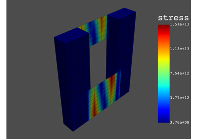
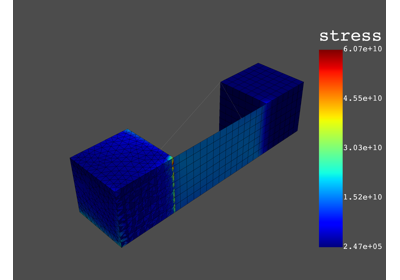
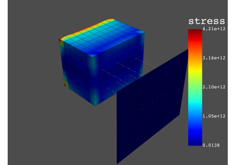
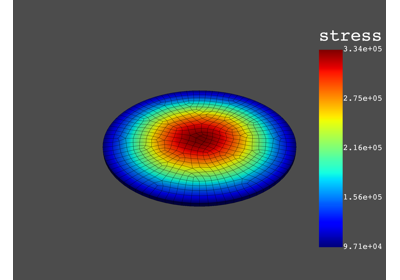
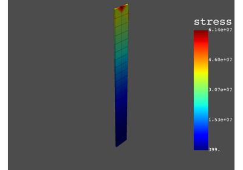
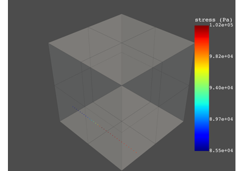

Examples#
End-to-end examples show how you can use PyDPF-Post. If PyDPF-Post is installed on your machine, you can download these examples as Python files or Jupyter notebooks and run them locally.
Note
Some examples require additional Python packages.
DPF-Post overview#
This example provides an overview of how you use DPF-Post.

DPF-Post overview
DPF-Post analysis types#
These examples show how you use DFP-Post analysis types.

Static analysis

Modal analysis

Harmonic analysis

Transient analysis
DPF-Post feature examples#
These examples show how you use DPF-Post features.



Request result on a specific path
Request result on a specific path